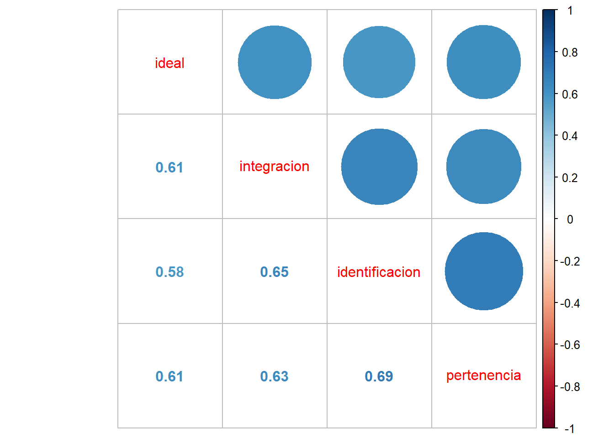
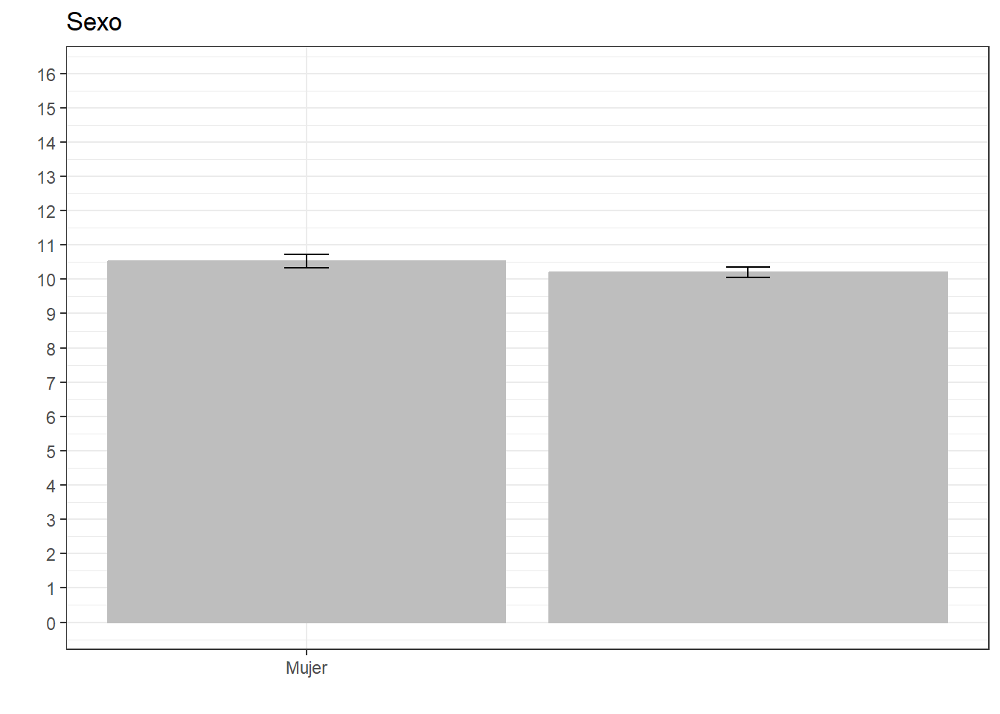

Trabajo1
Por: Kevin Carrasco
Introducción
La investigación sobre percepción de desigualdad económica ha tenido un auge durante los últimos años (ver Mijs 2021; también Cruces, Perez-Truglia, and Tetaz 2013).
Específicamente, se ha encontrado evidencia sobre que… (Mijs 2021). De todas formas, Cruces, Perez-Truglia, and Tetaz (2013) plantea que…
Así mismo, Mijs señala que… (2021)
Aunque ambos concluyen que… (Mijs 2021; Cruces, Perez-Truglia, and Tetaz 2013)
Análisis
Una vez que tenemos recodificadas nuestras variables en el archivo de preparación y logramos exportar la base de datos procesada en la carpeta input/data, abrimos un documento de quarto (.qmd) para realizar el análisis.
Al trabajar con quarto (y al intentar renderizar), el documento leerá todos lo que esté escrito en el documento desde 0, por lo que es necesario siempre cargar de nuevo los paquetes y bases de datos.
Primero cargamos los paquetes:
pacman::p_load(dplyr, sjmisc, car, sjlabelled, stargazer, haven, sjPlot, ggplot2, psych, kableExtra, corrplot, texreg)y la base procesada
load("input/data/elsoc2016_proc.RData")Análisis descriptivo
sjmisc::descr(proc_data,
show = c("label","range", "mean", "sd", "NA.prc", "n"))%>% # Selecciona estadísticos
kable(.,"markdown") # Esto es para que se vea bien en quarto| var | label | n | NA.prc | mean | sd | range | |
|---|---|---|---|---|---|---|---|
| 1 | ideal | Este barrio es ideal para mi | 2926 | 0.0341647 | 2.615174 | 1.0202541 | 4 (0-4) |
| 3 | integracion | Me siento integrado en este barrio | 2923 | 0.1366587 | 2.565515 | 0.9993502 | 4 (0-4) |
| 2 | identificacion | Me identifico con la gente de este barrio | 2923 | 0.1366587 | 2.523777 | 0.9884856 | 4 (0-4) |
| 7 | pertenencia | Me siento parte de este barrio | 2925 | 0.0683293 | 2.627692 | 0.9878809 | 4 (0-4) |
| 4 | m01 | Nivel educacional | 2925 | 0.0683293 | 5.260513 | 2.2015019 | 9 (1-10) |
| 6 | m0_sexo | Sexo del entrevistado | 2927 | 0.0000000 | 1.602665 | 0.4894300 | 1 (1-2) |
| 5 | m0_edad | Edad del entrevistado | 2927 | 0.0000000 | 46.090878 | 15.2867983 | 70 (18-88) |
En la Table 1 podemos observar los descriptivos generales de la base de datos procesada.
Y si queremos visualizar algo más:
proc_data %>% select(ideal, integracion, identificacion, pertenencia) %>%
sjPlot::plot_stackfrq()+
theme(legend.position = "bottom")
En la (plot-descriptivos?) podemos ver la distribución de las variables de cohesión barrial, donde se puede observar que más del 65% de la muestra está de acuerdo o totalmente de acuerdo con las afirmaciones indicadas.
Asociación de variables
Podemos ver la asociación de todas las variables, como lo muestra la ?@cor-complete
M <- cor(proc_data, use = "complete.obs") # Usar solo casos con observaciones completascorrplot.mixed(M)o podemos ver específicamente la asociación de las variables de cohesión barrial
M2 <- cor(dplyr::select(proc_data, ideal, integracion, identificacion, pertenencia), use = "complete.obs")
corrplot.mixed(M2)
La ?@cor-cohesion muestra que la asociación de las cuatro variables de cohesión barrial es alta y positiva, según Cohen (1998). En general el tamaño de efecto varía entre 0.58 la más baja y 0.69 la más alta.
Construcción de escala
psych::alpha(dplyr::select(proc_data, ideal, integracion, identificacion, pertenencia))
Reliability analysis
Call: psych::alpha(x = dplyr::select(proc_data, ideal, integracion,
identificacion, pertenencia))
raw_alpha std.alpha G6(smc) average_r S/N ase mean sd median_r
0.87 0.87 0.84 0.63 6.8 0.0039 2.6 0.85 0.62
95% confidence boundaries
lower alpha upper
Feldt 0.86 0.87 0.88
Duhachek 0.86 0.87 0.88
Reliability if an item is dropped:
raw_alpha std.alpha G6(smc) average_r S/N alpha se var.r med.r
ideal 0.85 0.85 0.80 0.66 5.8 0.0047 0.00086 0.65
integracion 0.84 0.84 0.78 0.63 5.1 0.0053 0.00299 0.61
identificacion 0.83 0.83 0.76 0.62 4.9 0.0055 0.00015 0.61
pertenencia 0.83 0.83 0.76 0.62 4.8 0.0055 0.00121 0.61
Item statistics
n raw.r std.r r.cor r.drop mean sd
ideal 2926 0.83 0.83 0.73 0.69 2.6 1.02
integracion 2923 0.85 0.85 0.78 0.73 2.6 1.00
identificacion 2923 0.86 0.86 0.80 0.74 2.5 0.99
pertenencia 2925 0.86 0.86 0.80 0.75 2.6 0.99
Non missing response frequency for each item
0 1 2 3 4 miss
ideal 0.04 0.14 0.13 0.55 0.14 0
integracion 0.04 0.15 0.14 0.56 0.12 0
identificacion 0.04 0.15 0.16 0.55 0.10 0
pertenencia 0.03 0.14 0.12 0.57 0.13 0La consistencia interna de una posible escala entre estos cuatro ítems es de 0.87, lo que representa una alta consistencia interna. Si quitaramos alguno de estos ítems la consistencia interna solo bajaría, así que podemos construir una escala con los cuatro ítems.
proc_data <- proc_data %>%
rowwise() %>%
mutate(cohesion_barrial = sum(ideal, integracion, identificacion, pertenencia))
summary(proc_data$cohesion_barrial) Min. 1st Qu. Median Mean 3rd Qu. Max. NA's
0.00 8.00 12.00 10.33 12.00 16.00 10 y la podemos visualizar en un gráfico:
ggplot(proc_data, aes(x = cohesion_barrial)) +
geom_histogram(binwidth=0.6, colour="black", fill="yellow") +
theme_bw() +
xlab("Cohesión barrial") +
ylab("Cantidad")Warning: Removed 10 rows containing non-finite values (`stat_bin()`).El (plot-cohesion?) muestra la distribución de la nueva escala de Cohesión Barrial que construimos. En general, la mayor concentración de casos está en la categoría 12 y que sumado a un promedio de 10.33 según los descriptivos anteriores, podríamos afirmar que la cohesión barrial en Chile es alta.
Regresiones
reg5 <- lm(cohesion_barrial ~ m0_edad, data=proc_data)
reg6 <- lm(cohesion_barrial ~ m0_edad + m01, data=proc_data)
reg7 <- lm(cohesion_barrial ~ m0_edad + m01 + m0_sexo, data=proc_data)
knitreg(list(reg5, reg6, reg7),
custom.model.names = c("Modelo 1",
"Modelo 2",
"Modelo 3"),
custom.note = "*** p < 0.001; ** p < 0.01; * p < 0.05",
custom.coef.names = c("Intercepto",
"Edad",
"Educación",
"Mujer <br> <i>(Ref. Hombre)</i>"),
caption = "Cohesión barrial",
caption.above = TRUE)| Modelo 1 | Modelo 2 | Modelo 3 | |
|---|---|---|---|
| Intercepto | 8.42*** | 7.96*** | 8.50*** |
| (0.20) | (0.30) | (0.36) | |
| Edad | 0.04*** | 0.04*** | 0.04*** |
| (0.00) | (0.00) | (0.00) | |
| Educación | 0.06* | 0.06 | |
| (0.03) | (0.03) | ||
|
Mujer (Ref. Hombre) |
-0.33** | ||
| (0.13) | |||
| R2 | 0.03 | 0.04 | 0.04 |
| Adj. R2 | 0.03 | 0.04 | 0.04 |
| Num. obs. | 2917 | 2915 | 2915 |
| *** p < 0.001; ** p < 0.01; * p < 0.05 | |||
ggeffects::ggpredict(reg7, terms = c("m0_sexo")) %>%
ggplot(aes(x=x, y=predicted)) +
geom_bar(stat="identity", color="grey", fill="grey")+
geom_errorbar(aes(ymin = conf.low, ymax = conf.high), width=.1) +
labs(title="Sexo", x = "", y = "") +
theme_bw() +
scale_x_continuous(name = "",
breaks = c(0,1),
labels = c("Hombre", "Mujer"))+
scale_y_continuous(limits = c(0,16),
breaks = seq(0,16, by = 1))